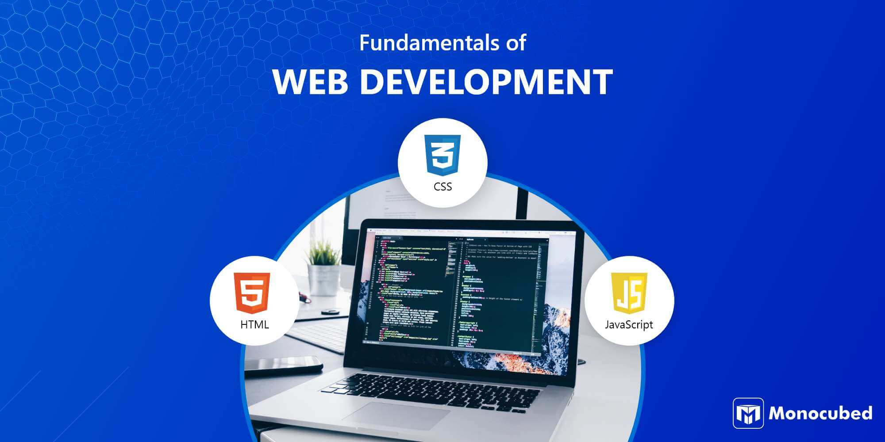

Otu Maduabuchi Okah
About me

Hi there! My name is Otu Maduabuchi Okah, and I'm currently based in Ebonyi State, Nigeria. I'm a passionate learner with a growing interest in web development and digital design. I enjoy exploring how technology can solve real-world problems and create meaningful user experiences. When I'm not coding, you'll probably find me reading, sketching ideas, or diving into documentaries about science and history. I also love connecting with people and learning about different cultures and perspectives. My goal in this course is to strengthen my foundation in HTML, CSS, and JavaScript so I can build dynamic, responsive websites from scratch. I'm excited to turn creative ideas into functional web pages and eventually contribute to impactful projects in tech.
Course Goals
In WDD 131, I aim to build a strong foundation in front-end web development by mastering the core technologies: HTML, CSS, and JavaScript. I want to move beyond static pages and learn how to create dynamic, interactive websites that respond to user input and deliver meaningful experiences. Specifically, I hope to: Understand how to structure content semantically using HTML. Apply modern styling techniques with CSS, including Flexbox and Grid. Use JavaScript to add interactivity and automate tasks on the page. Improve my design sense by practicing layout, color theory, and typography. Gain confidence in organizing projects with clean file structures and reusable code. By the end of the course, I want to be able to build a fully functional, well-designed personal website and feel ready to take on more advanced web development challenges..